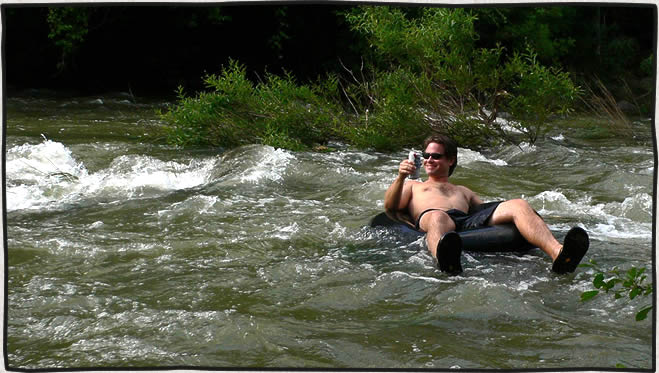

Tubing and Kayaking Barton Creek
posted Mar 12, 2009 Barton Creek, on the green belt in Austin, is usually a dry, rocky creek bed. Every few years we are lucky enough to receive enough rain in the area to fill it up long enough for a few runs in the tubes or kayaks. 2007 was the last year the creek maintained enough water to run. You can check the flow rates at the USGS site. This is the Barton Creek flow rate measured from the 360 access. We have run it as low as 180cfs and as high as 750cfs. The most consistently fun flow rate seems to be around 400cfs. Here is a video of running it at 180cfs. Check out my employee destination guide on things to do in Austin outdoors.

George Martin about to go over the right side of Twin Falls There are several good access points to put in and take out. The best take out is at the very end where Barton Creek flows into Barton Springs pool. There is a diversion tunnel under the sidewalk on the north side of the pool for the creek to continue flowing through. Or in some cases, completely flowing through the pool when large rainstorms hit the area. In 2007 we actually tubed the diversion tunnel. Squeezing through the vertical steel bars we floated the pitch black tunnel popping out the other side at Barking Springs – much too everyone’s surprise. It was so much fun we did it twice more that day. Sadly (but probably smartly) the tunnel entrance now has horizontal steel bars to prevent anyone from squeezing through.
Shorter Routes for Kayakers and Tubers
Paddling through Campbell’s Hole The best put in spots depend on how far you want to go. The Gus Fruh entrance to green belt provides about a 1½ hour float to Barton Springs and covers about 3 miles. It’s a good balance of rapids, fast moving water and some long slow pools. You get to run Campbell’s Hole near the end. Several miles up from Gus Fruh is the 360 access. Allow at least 2-3 hours to float from here. Lots of rapids on this section including Sculpture Falls, Twin Falls, Triple Falls, and Campbell’s Hole. All rapids can be run in a tube or kayak. I do recommend scouting them out of your boat before running though. We have actually passed hesitant kayakers in full gear who decided it was best not to run Twin Falls. They looked on incredulously as we tubed over the falls complete with beer in tow.
The Longer Routes

Amanda Martin with our boats at the put in off sh71The next two put in spots we have used I recommend only running in a kayak or whitewater canoe (not a tube) unless you plan on taking out before Barton Springs. Lost Creek is further up from loop 360 and offers an 8 mile paddle. The put in is a low bridge in a subdivision that can be accessed by driving down Lost Creek Blvd. off of loop 360. Just stay on Lost Creek Blvd. a few miles until you get down to the water. The first couple miles is easy going and then you hit the 6 foot drop at the “hill of life”. This is always fun to go over and pretty safe since there is a large pool waiting for you below. There is more fun fast moving water and some small rapids but the good stuff starts when you get to 360.

Taking a break in the middle of the creek on the sh71 runIf you have all day to paddle I definitely recommend the 20 mile sh71 all the way to Barton Springs. You can always shorten it by doing the 12 miles to Lost Creek. The put in for sh71 is underneath the bridge that crosses over Barton Creek less than a mile before the junction of Bee Caves Road and sh71. Paddling the first 12 miles to Lost Creek feels more like you’re on a remote wilderness river rather than in the middle of Austin. There are not many significant rapids on this section although there is one low water crossing that can be run.
Commenting is closed for this article.
Get in touch
Patrick [at] MountainDrawn.com